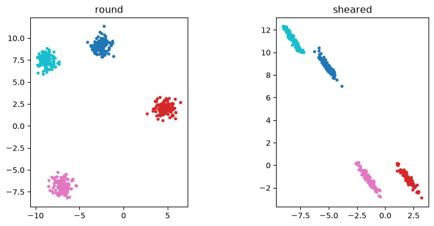

Clustering Has No Labels to Tune Against, So the Metric Can Lie
Which clustering hyperparameters can honestly be tuned on a held-out split, what the label-free metrics measure, and a worked case where the silhouette picks the wrong number of clusters with a straight face.
Clustering
Machine Learning
Author
Ravi Kalia
Published
January 27, 2025
Clustering
Tuning a classifier is a solved routine: hold out some data, try the settings, keep the one that scores best on the held-out part. Clustering breaks the routine at the last step, because there is no score. Nothing in the data says which points belong together, so the number of clusters, the density threshold or the linkage rule has to be chosen against a metric that is computed from the clustering itself. Those metrics are useful and they are not the truth, and the gap between the two is what this post is about: which knobs can be tuned on a split at all, what the label-free metrics reward, and a small case where the most popular one picks the wrong answer.
Only some clustering algorithms can be tuned on a split
A validation split works for a classifier because the model can be fitted on one part and scored on another. Some clustering algorithms have that shape and some do not. K-means and Gaussian mixtures produce a rule that assigns a new point to a cluster, so they can be fitted on training data and their assignments scored on validation data. Agglomerative clustering has no such rule in scikit-learn, but its clusters have centroids, and assigning each held-out point to the nearest one is a rule of the same kind, written by hand. DBSCAN and OPTICS do not: they label the points they were given by local density, and a held-out point has no label until it is clustered along with the rest. Spectral clustering needs the affinity matrix of the whole set, which a split distorts.
Algorithm
Knobs
Tune on a split?
K-means
n_clusters, init
yes: predict exists
Agglomerative
n_clusters, linkage
yes, by nearest training centroid, written by hand
Gaussian mixture
n_components, covariance_type
yes, and log-likelihood or BIC is a real score
DBSCAN, OPTICS
eps, min_samples
no: refit on subsets instead
Spectral
n_clusters, affinity
no: the affinity matrix is global
For the first three the recipe is the classifier’s, with one change: the score on the validation set is a label-free metric rather than accuracy.
The label-free metrics reward compactness and separation, not correctness
Three metrics come up, and they all measure geometry:
The silhouette of a point compares its mean distance to its own cluster with its mean distance to the nearest other cluster; the score averages over points and runs from \(-1\) to \(1\). High means tight clusters far apart.
Davies–Bouldin is a ratio of within-cluster scatter to between-cluster distance, averaged over the worst pairing; lower is better.
Inertia, k-means’s own objective, is the total squared distance to the centroids; it always falls as \(k\) grows, so it is read for an elbow rather than a minimum.
With ground truth, the adjusted Rand index and normalised mutual information compare a clustering to the true labels, and those are the honest scores. They are also unavailable in exactly the situation clustering is for. The metrics above stand in for them by assuming that the true clusters are compact and well separated, and that assumption is where they fail.
A case where the silhouette is confident and wrong
The data is synthetic so that the truth is known: 500 points in the plane from four Gaussian blobs of equal size, generated by scikit-learn’s make_blobs, standing in for any dataset with a handful of real groups. Split 70/15/15, fit k-means on the training part for \(k\) from 2 to 6, and score the validation assignments both ways.
Code
import numpy as npfrom sklearn.cluster import KMeansfrom sklearn.datasets import make_blobsfrom sklearn.metrics import adjusted_rand_score, silhouette_scorefrom sklearn.model_selection import train_test_splitX, y = make_blobs(n_samples=500, centers=4, cluster_std=0.6, random_state=42)X_train, X_tmp, y_train, y_tmp = train_test_split(X, y, test_size=0.3, random_state=42)X_val, X_test, y_val, y_test = train_test_split(X_tmp, y_tmp, test_size=0.5, random_state=42)def score_by_k(X_fit, X_score, y_score, ks=(2, 3, 4, 5, 6)): rows = []for k in ks: labels = KMeans(n_clusters=k, n_init=10, random_state=42).fit(X_fit).predict(X_score) rows.append((k, silhouette_score(X_score, labels), adjusted_rand_score(y_score, labels)))return rowsprint("round blobs k silhouette ARI")for k, sil, ari in score_by_k(X_train, X_val, y_val):print(f"{'':13}{k}{sil:.3f}{ari:.3f}")
round blobs k silhouette ARI
2 0.597 0.304
3 0.817 0.724
4 0.887 1.000
5 0.767 0.958
6 0.587 0.854
On round, well-separated blobs the silhouette and the ARI agree: both peak at \(k = 4\), the silhouette at 0.887 and the ARI at 1.000. This is the case the metric was designed for, and a validation split with a silhouette score picks the right \(k\).
Now shear the same points, so that each blob becomes an elongated ellipse leaning the same way. The four groups are unchanged; only their shape is.
Code
shear = np.array([[0.6, -0.6], [-0.4, 0.8]])Xs = X @ shearXs_train, Xs_val = X_train @ shear, X_val @ shearprint("sheared blobs k silhouette ARI")for k, sil, ari in score_by_k(Xs_train, Xs_val, y_val):print(f"{'':13}{k}{sil:.3f}{ari:.3f}")
sheared blobs k silhouette ARI
2 0.843 0.501
3 0.803 0.705
4 0.774 1.000
5 0.733 0.948
6 0.667 0.835
The ARI still peaks at \(k = 4\), because the groups are still there. The silhouette now peaks at \(k = 2\): two elongated blobs lying near each other look, to a metric built from mean distances, like one wide cluster, and merging them raises the score. A tuning loop that keeps the best silhouette returns two clusters, prints a respectable score, and is wrong, with nothing in its output to say so.
Code
import matplotlib.pyplot as pltfig, axes = plt.subplots(1, 2, figsize=(9, 4))for ax, data, title in ((axes[0], X, "round"), (axes[1], Xs, "sheared")): ax.scatter(data[:, 0], data[:, 1], c=y, s=8, cmap="tab10") ax.set_title(title) ax.set_aspect("equal")plt.tight_layout()plt.show()

The same four groups, round (left) and sheared (right). The silhouette picks four clusters on the left and two on the right; the truth is four in both.
What to do when the metric cannot be trusted
The failure is not a bug in the silhouette; it is the assumption of compact, round clusters being false. Three responses follow from that.
Match the model to the shape. A Gaussian mixture with full covariance fits elongated clusters that k-means cannot, and its likelihood gives a score that does not assume roundness: the Bayesian information criterion, the fitted log-likelihood penalised by the number of parameters, lower being better. On the sheared training data it picks four components, and those four match the truth on the validation set.
Code
from sklearn.mixture import GaussianMixtureprint("sheared blobs k BIC (train) ARI (val)")for k in (2, 3, 4, 5, 6): gmm = GaussianMixture(n_components=k, covariance_type="full", random_state=42).fit(Xs_train)print(f"{'':13}{k}{gmm.bic(Xs_train):7.0f}{adjusted_rand_score(y_val, gmm.predict(Xs_val)):.3f}")
Read the metric against the data, not alone. A silhouette curve that peaks at \(k = 2\) on data with visible structure is a prompt to look, and a scatter plot is cheap. Where the data are high-dimensional, plot the clusters in a two-dimensional projection rather than trusting a number.
Use cross-validation for the algorithms without predict. For DBSCAN and spectral clustering, refit on several subsets of the training data and check that the clustering is stable across them; a parameter setting whose clusters change from subset to subset is not finding structure.
And keep the test set for the end, as in supervised learning: a test-set silhouette is only informative about the settings chosen on validation data if it was never used to choose them.
Rousseeuw, P. J. (1987). Silhouettes: a graphical aid to the interpretation and validation of cluster analysis. Journal of Computational and Applied Mathematics20, 53–65.
Davies, D. L. and Bouldin, D. W. (1979). A cluster separation measure. IEEE TPAMI1(2).
Hubert, L. and Arabie, P. (1985). Comparing partitions. Journal of Classification2, 193–218. (The adjusted Rand index.)